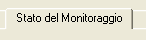
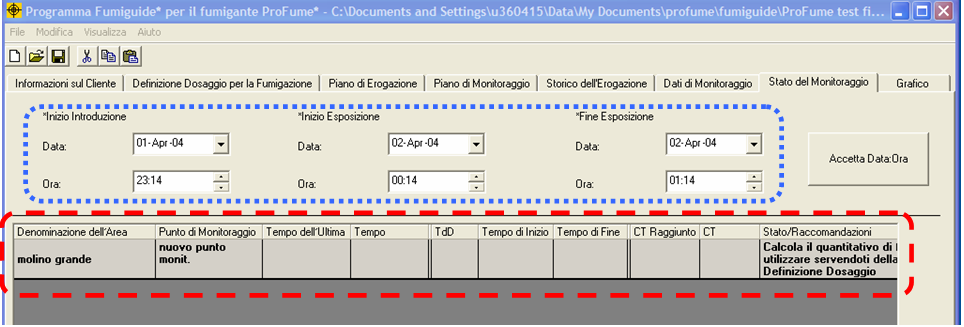
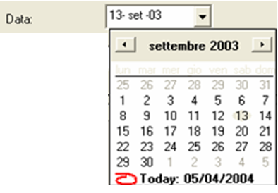
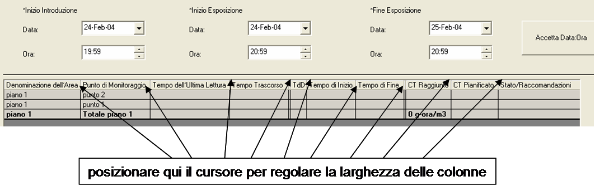
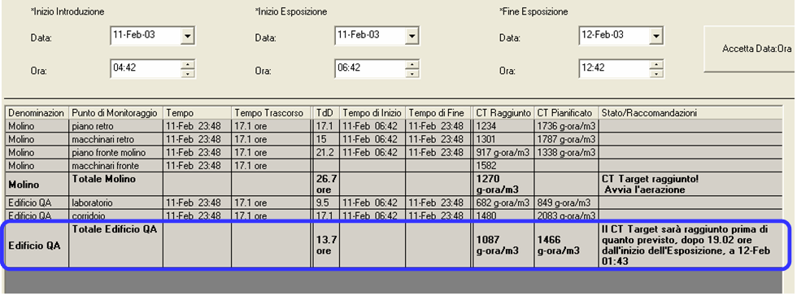
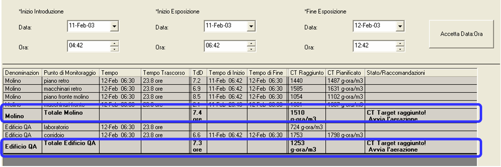
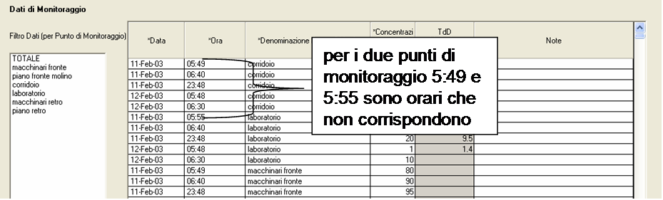
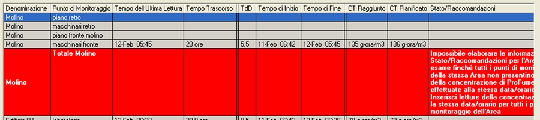

Tab
Stato del Monitoraggio
Una volta inserito un sufficiente numero di
dati di monitoraggio nel tab Dati di Monitoraggio, il fumigatore può valutare lo stato della fumigazione e visionare le raccomandazioni nel tab Stato del Monitoraggio.

Il tab Stato del Monitoraggio consta di due sezioni: i
campi per la compilazione da parte dell’utente (Inizio Erogazione, Inizio Esposizione e Fine Esposizione) e la tabella di Stato. I campi Inizio Erogazione, Inizio Esposizione e Fine Esposizione possono essere modificati dal fumigatore. Tutte le informazioni contenute nella tabella di Stato sono invece calcolate da ProFume Fumiguide sulla base dei dati di monitoraggio e dei tempi di Inizio Esposizione e Fine Esposizione. Le informazioni su Stato/Raccomandazioni per raggiungere il Dosaggio Target derivano dai dati inseriti nei tab Definizione Dosaggio per la Fumigazione e Dati di Monitoraggio.

Ecco la definizione dei termini relativi
ai campi per la compilazione da parte dell’utente:
Inizio Erogazione: momento in cui il
fumigante viene erogato nella struttura o nella cella da sottoporre a fumigazione. Deve essere antecedente al momento di Inizio Esposizione.
Inizio
Esposizione: momento in cui inizia l’accumulo del CT (dosaggio). Deve
essere successivo all’Inizio Erogazione e antecedente alla Fine Esposizione. Eventuali dati provenienti da letture della concentrazione effettuate prima dell’Inizio Esposizione non sono compresi nell’accumulo del CT.
Fine Esposizione:
momento in cui termina l’accumulo del CT (dosaggio). Deve essere successiva all’Inizio Esposizione. Eventuali dati provenienti da letture della concentrazione effettuate dopo la Fine Esposizione non sono compresi nell’accumulo del CT.
Inserimento dei dati di Inizio Erogazione, Inizio Esposizione e Fine Esposizione
Il formato del campo
Data è gg/mm/aa (ad es. 04-Mar-04). Il formato del campo Ora è hh:mm.
Data e Ora di Inizio Erogazione, Inizio Esposizione e Fine Esposizione devono essere definite inizialmente nel tab Dati di Monitoraggio prima dell’inserimento di qualunque dato di monitoraggio. Data e Ora vengono poi trasmesse automaticamente dal tab Dati di Monitoraggio al tab Stato del Monitoraggio.
Per generare nel tab Stato del Monitoraggio le informazioni Stato/Raccomandazioni è necessario che siano stati precedentemente inseriti i dati di monitoraggio per Area nel tab Dati di Monitoraggio.
Modifica dei dati di Inizio Erogazione, Inizio Esposizione e Fine Esposizione Data e Ora di Inizio Erogazione, Inizio
Esposizione e Fine Esposizione possono essere modificate in qualunque momento (a condizione che siano state precedentemente inserite nel tab Dati di Monitoraggio).
Modificando
Data o Ora di Inizio Erogazione, Inizio Esposizione o Fine Esposizione nel tab Stato del Monitoraggio o nel tab Dati di Monitoraggio, si modifica automaticamente il corrispondente valore nell’altro tab.
Data e Ora possono essere modificate in diversi modi:
1)
Selezionando il giorno, il mese o l’anno nel campo Data e inserendo manualmente il nuovo valore;
2) Cliccando a destra nel campo Data sulla freccia che apre la barra di scorrimento del calendario e selezionando la data appropriata cliccandovi sopra.
3) Cliccando nel campo Ora su ore e minuti in base al valore che si desidera modificare e agendo sulle frecce su o giù.


I tempi di Inizio Esposizione
e Fine Esposizione determinano il Periodo di Esposizione della fumigazione e fissano i limiti temporali entro i quali viene calcolato l’accumulo del CT.
I tab
Stato del Monitoraggio e Definizione Dosaggio per la Fumigazione devono presentare ugual durata del Periodo di Esposizione affinché si generino istruzioni accurate per Stato/Raccomandazioni.
Attenzione: il Periodo di Esposizione deve essere lo stesso nei tab Definizione Dosaggio per la Fumigazione e Stato del Monitoraggio. Se, in seguito a modifiche dell’Inizio Esposizione o della Fine Esposizione, cambia il Periodo di Esposizione (durata dell’esposizione) nel tab Stato del Monitoraggio, va modificato anche il Periodo di Esposizione nel tab Definizione Dosaggio per la Fumigazione per farlo coincidere con il nuovo valore del tab Stato del Monitoraggio. Dopo che il Periodo di Esposizione è stato cambiato occorre ricalcolare il Dosaggio.
Colonne della tabella Stato del Monitoraggio Le
dimensioni delle colonne si possono regolare posizionando il cursore in
corrispondenza della linea grigia che separa i titoli di due colonne e procedendo ad aumentare o ridurre la larghezza come desiderato.

Denominazione dell’Area:
nome dell’intera struttura oppure di un’area o porzione della struttura da sottoporre a fumigazione. Va inserito nel tab Definizione Dosaggio per la Fumigazione e solo lì può essere modificato.
Un’Area può presentare più
di un punto di monitoraggio ma le informazioni Stato/Raccomandazioni sono definite per Area e non per singoli punti di monitoraggio.
Fumiguide crea automaticamente una riga cumulativa “Totale
Area" dove sono riportati i valori medi di TdD, CT Raggiunto e CT Pianificato
derivanti dai vari punti di monitoraggio dell’area in esame. In questa riga
(evidenziata sotto) la denominazione dell’Area in grassetto è preceduta da "Totale" ad indicare come essa rappresenti Stato/Raccomandazione per l’intera Area.
Le informazioni
Stato/Raccomandazioni si basano sulla media delle concentrazioni rilevate nei
vari punti di monitoraggio di quell’Area. Per un’area che presenti più di un
Punto di Monitoraggio, nelle singole righe dei vari punti di monitoraggio il
nome dell’area non viene visualizzato in grassetto.
Punto di Monitoraggio: denominazione dei
punti di monitoraggio inserita nel tab Piano di Monitoraggio. Un’Area dello
spazio sottoposto a fumigazione può presentare più di un punto di monitoraggio. Nella riga riassuntiva ospitante la media dei vari Punti di Monitoraggio compaiono il valore medio del TdD, del CT Raggiunto e del CT Pianificato e le informazioni Stato/Raccomandazione relative ai punti di monitoraggio di quell’Area. Al posto della denominazione del Punto di Monitoraggio appare "Totale" seguito dal nome dell’Area.

Ecco le
definizioni degli altri termini di questo tab:
Tempo dell’Ultima Lettura:
data e ora dell’ultima lettura del dato di concentrazione in corrispondenza del punto di monitoraggio.
Tempo Trascorso: ammontare di ore
trascorse dall’Inizio Esposizione fino all’ultima lettura della concentrazione di fumigante.
TdD: Tempo di Dimezzamento calcolato tra
il più recente picco di concentrazione di fumigante e l’ultima lettura della concentrazione. Il TdD visualizzato nella riga "Totale Area" rappresenta la media del TdD dei singoli punti di monitoraggio di quell’Area.
Tempo di Inizio Conteggio
TdD: momento più recente in cui la concentrazione rilevata in corrispondenza del punto di monitoraggio ha raggiunto il livello massimo.
Tempo di Fine Conteggio
TdD: momento dell’ultima lettura della concentrazione.
CT Raggiunto:
prodotto Concentrazione x Tempo raggiunto tra l’Inizio Esposizione e il Tempo dell’Ultima Lettura. L’eventuale esposizione degli infestanti a ProFume dopo il momento di Fine Esposizione è esclusa dal calcolo del CT Raggiunto. Nella riga "Totale Area", il CT Raggiunto rappresenta la media dei CT Raggiunti in corrispondenza dei singoli punti di monitoraggio in quell’Area.
CT Pianificato:
CT che si prevede di accumulare nel corso del Periodo di Esposizione pianificato in base al TdD effettivo e ai valori della concentrazione di fumigante, supponendo che il TdD non vari dall’ultima lettura alla Fine Esposizione. Il calcolo del CT Pianificato e del tempo previsto per il completamento della fumigazione dipendono dall’elaborazione del TdD. Il CT pianificato figurante nella riga "Totale Area" corrisponde al CT Pianificato per i singoli punti di monitoraggio in quell’Area.
Stato/Raccomandazioni: breve rapporto,
contemporaneo al Tempo dell’Ultima Lettura, sull’evolversi della fumigazione in vista del raggiungimento del Dosaggio Target. Questa voce fornisce anche Raccomandazioni su come raggiungere il Dosaggio Target. Si modifica nel tempo con l’inserimento di nuovi dati di monitoraggio.
Ecco un
esempio di come appare il tab Stato del Monitoraggio durante la fumigazione.
Notare come ai valori del TdD dell’area, del CT Raggiunto, del CT Pianificato e
allo Stato/Raccomandazioni corrisponda testo in grassetto (evidenziato
sotto).

Note su Stato / Raccomandazioni
Il
campo Stato/Raccomandazioni fornisce informazioni sull’evolversi della fumigazione e offre indicare su eventuali azioni correttive da attuare, quali l’aggiunta di fumigante o il prolungamento del Periodo di Esposizione.
Le informazioni
Stato/Raccomandazioni non possono generarsi finchè non vengano inseriti dati di monitoraggio relativi ad un’Area nel tab Dati di Monitoraggio. Le indicazioni relative a Stato/Raccomandazioni dipendono dal Dosaggio Target e dall’evolversi della fumigazione in vista del raggiungimento del CT Target e sono specifiche per Area.
Le informazioni
Stato/Raccomandazioni si
basano sugli ultimi dati di monitoraggio e possono quindi subire variazioni in seguito all’inserimento di nuovi dati di monitoraggio nel tab Dati di Monitoraggio.
Nel caso un’Area presenti un solo Punto di Monitoraggio, le informazioni Stato/Raccomandazioni figurano nella riga relativa all’unico Punto di Monitoraggio. In questo caso la denominazione dei Punto di Monitoraggio sarà in grassetto.
Nel caso un’Area
presenti più di un Punto di Monitoraggio, Fumiguide genera automaticamente una
riga "Totale Area" individuata dalla dicitura "Totale [Denominazione
dell’Area]" in grassetto all’interno della colonna Punto di Monitoraggio.
(Vedere il tab Piano di Monitoraggio per il layout dell’Area/Punto di Monitoraggio creato dall’utente). Le informazioni Stato/Raccomandazioni si basano sulla media delle concentrazioni rilevate in corrispondenza dei vari Punti di Monitoraggio dell’Area.
Qualora nessun valore della concentrazione di ProFume venga inserito in corrispondenza dell’Inizio Esposizione o della Fine Esposizione, Fumiguide lo calcola automaticamente per interpolazione. Tale valore interpolato non viene però visualizzato.
Per visualizzare interamente il campo Stato/Raccomandazioni di un’Area, servirsi della barra di scorrimento situata nella parte inferiore della tabella.
Messaggi dello Stato/Raccomandazioni
Se le letture della concentrazione sono antecedenti
all’Inizio Esposizione, l’indicazione stato/raccomandazione è: "L’erogazione del
fumigante è cominciata. Il Periodo di Esposizione deve ancora iniziare."
Se la concentrazione di fumigante sta aumentando,
l’indicazione stato/raccomandazione è: "Esposizione al gas in corso. Il calcolo
del CT Pianificato inizierà quando la concentrazione smetterà di aumentare."
Nel caso un’Area presenti più di un punto di monitoraggio, data e ora dei punti di monitoraggio devono corrispondere ai fini dell’elaborazione delle istruzioni Stato/Raccomandazioni. L’esempio seguente mostra un’area con due punti di monitoraggio in cui data e ora non corrispondono:

Ecco un esempio di istruzioni Stato/Raccomandazioni generato per un’Area in cui data e ora dei punti di monitoraggio non corrispondono:

“Impossibile elaborare le informazioni
Stato/Raccomandazioni per l'Area in esame finché tutti i punti di monitoraggio della stessa Area non presentino letture della concentrazione di ProFume effettuate alla stessa data/orario. Inserisci letture della concentrazione con la stessa data/orario per tutti i punti di monitoraggio dell'Area."
Se il Dosaggio Target viene raggiunto entro il Periodo di Esposizione pianificato (+/- 2% del Periodo di Esposizione), l’indicazione stato/raccomandazione è:
"La fumigazione procede come previsto per raggiungere il CT Target nel Periodo di Esposizione pianificato."
Se il Dosaggio Target viene raggiunto prima della fine del Periodo di Esposizione pianificato, l’indicazione stato/raccomandazione è:
"Il CT Target sarà raggiunto prima di quanto previsto, dopo {ore necessarie} ore dall’inizio dell’Esposizione, a {data e ora}."
Nel caso il Dosaggio Target non possa essere raggiunto come pianificato ma occorra o più tempo o più fumigante o entrambe le cose, la frase iniziale nello stato/raccomandazione è:
"Impossibile raggiungere il CT Target pianificato."
Nel caso il prolungare l’esposizione permetta di
raggiungere il CT Target oppure l’integrare la quantità di fumigante
mantenendo invariato il Periodo di Esposizione permetta di non superare il
limite di concentrazione di 128 g/m3 (once/103 p.c.), l’indicazione stato/raccomandazione è:
“Per raggiungere il CT
Target occorre integrare la quantità di ProFume o estendere il Periodo di Esposizione. Aggiungi {quantità di fumigante} di ProFume per ottenere la nuova Concentrazione Target di {nuova concentrazione target}, oppure estendi il Periodo di Esposizione portandolo ad un totale di {ore} ore, fino a {data e ora}."
Nel caso il prolungare l’esposizione senza aggiungere
ulteriore fumigante permetta di raggiungere il Dosaggio Target mentre
l’integrare la quantità di fumigante mantenendo invariato il Periodo di
Esposizione porti al superamento del limite di concentrazione di 128
g/m3 (once/103 p.c.), l’indicazione stato/raccomandazione è:
“Per raggiungere il CT Target occorre estendere il Periodo
di Esposizione. Opzione 1: Estendi il Periodo di Esposizione portandolo ad un
totale di [numero di ore necessarie] ore, fino a [data e ora in cui viene
raggiunto il Dosaggio Target]. Opzione 2: Se non puoi estendere il Periodo di
Esposizione, aggiungi [quantità di ProFume] di ProFume per arrivare alla massima
Concentrazione Target consentita di 128 {g/m3 o once/103 piedi cubici} che potrebbe."
Nel caso il prolungare l’esposizione senza aggiungere
ulteriore fumigante non permetta di raggiungere il Dosaggio Target mentre
l’integrare la quantità di fumigante mantenendo invariato il Periodo di
Esposizione permetta di non superare il limite di concentrazione di 128
g/m3 (once/103 p.c.), l’indicazione stato/raccomandazione è:
“La concentrazione di ProFume è troppo bassa per arrivare
al CT Target semplicemente estendendo il Periodo di Esposizione. Opzione 1: Per raggiungere il CT target nel Periodo di Esposizione pianificato aggiungere [quantità di ProFume] di ProFume per ottenere la nuova Concentrazione Target di [nuova concentrazione target]. Opzione 2: Estendere il Periodo di Esposizione e visionare le nuove informazioni Stato/Raccomandazioni per l'aggiunta di gas.”
Nel caso il prolungare l’esposizione senza aggiungere
ulteriore fumigante non permetta di raggiungere il Dosaggio Target mentre
l’integrare la quantità di fumigante mantenendo invariato il Periodo di
Esposizione porti al superamento del limite di concentrazione di 128
g/m3 (once/103 p.c.), l’indicazione stato/raccomandazione è:
“Mantenendo l'attuale Periodo di Esposizione, aggiungere
ProFume per raggiungere il CT Target significherebbe superare la massima
Concentrazione Target consentita di 128 [unità metriche g/m3; unità inglesi
once/103 p.c.]. Opzione 1: Estendi il Periodo di Esposizione e visiona le nuove informazioni Stato/Raccomandazioni con le azioni da effettuare. Opzione 2: Se non puoi estendere il Periodo di Esposizione, aggiungi [quantità di ProFume] di ProFume per arrivare alla massima Concentrazione Target consentita di [nuova concentrazione Target] che potrebbe però non bastare a raggiungere il CT Target.”
Nel caso manchi meno di un’ora alla fine del Periodo di
Esposizione, istruzioni sull’integrazione del gas non possono essere valutate dato che Fumiguide presume che l’erogazione del fumigante richieda almeno un’ora di tempo:
“Hai ancora 30 minuti di Tempo di Esposizione residuo per elaborare le modalità di aggiunta del gas. Per raggiungere il CT Target integrando la quantità di ProFume occorre estendere il Tempo di Esposizione.”
Se il CT Target è stato raggiunto, l’indicazione stato/raccomandazione è:
"CT Target raggiunto! Avvia l’aerazione."
Qualora i dati di monitoraggio continuino ad essere inseriti una volta raggiunta la Fine Esposizione, l’indicazione stato/raccomandazione è:
"Il calcolo del CT non tiene conto dei dati di monitoraggio inseriti dopo la Fine dell’Esposizione."